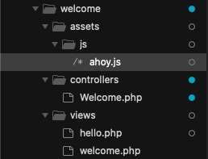
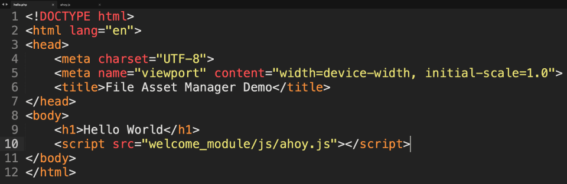

Inside your 'welcome' module, you should have two folders - one named 'controllers' and another named 'views'. Let's create a third folder - inside the 'welcome' module. Give this folder the name, 'assets'.
Inside your 'assets' folder, create a folder (i.e., a subdirectory) called 'js'. We'll use this subdirectory for storing JavaScript files inside our module.
Now, we're going to create a JavaScript file. This particular JavaScript file is going to contain one line of code - a simple alert command.
alert("JavaScript ahoy!");
Save your file as 'ahoy.js' and have the file saved inside the 'js' folder that's inside 'assets'.

Now, we're going to load the JavaScript file from within our 'hello' view file. To do this, we'll use ordinary 'script' tags with the 'src' attribute set to:
welcome_module/js/ahoy.js
So, the code for your view file should now look like this:

Save your file and refresh the page on your browser. If a JavaScript alert box appears on your page then it confirms that the JavaScript file has been successfully loaded.
Here, you included a JavaScript file inside your module. However, it could have been an image, a PDF, a CSS file or some other non-PHP resource.